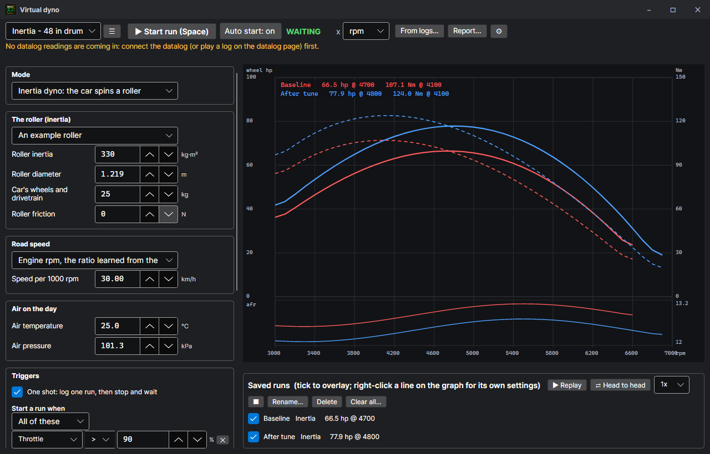

Virtual dyno
Datalogging > Virtual dyno works out power and torque from the ECU's own datalog: on a roller dyno, or from the car's weight on a straight, flat stretch of road or track.

The two modes
| Mode | How it works | What it needs |
|---|---|---|
| Inertia dyno | The car spins a roller of known inertia. Power is how fast the roller speeds up times its inertia. | The roller's inertia (kg m², from the dyno maker) and diameter. Optionally the car's own spinning parts and the roller's friction. |
| Strip | The car's own mass is accelerated. Air drag and rolling resistance are added back. | The car's weight (pick a car to fill it in), driver and fuel, drag coefficient, frontal area, and rolling resistance. Use the same flat, straight stretch every time, in the same direction if there is wind. |
Both use the same sum: power = (mass × acceleration + drag) × speed. The acceleration comes from a straight line fitted through the speed over a short window (Smoothing sets how long). Torque is the power divided by engine speed. The curve is averaged in rpm steps.
Road speed
The speed sensor only reads whole km/h, which is too coarse to differentiate. By default the dyno uses engine rpm instead, scaled by the ratio between rpm and road speed that the run itself shows. Keep the run in one gear with the clutch fully engaged. If there is no speed sensor, type in the km/h per 1000 rpm for the gear.
Cars
The car list fills in the weight, drag and frontal area. It covers the Civic EF, EG and EK, the CRX, Integra DA, DB and DC, Accord CB, CD, CL and the US CG, and Prelude BA and BB, in their JDM, EDM and USDM versions. Weights are the makers' curb weights for base trims with manual gearboxes. Weigh your car if you can: every kilogram wrong makes the power wrong by the same share.
The window and Settings > Dyno
The dyno window keeps what changes from car to car, saved by name as a profile: the mode, the car or the roller, how road speed is found, the air on the day, the triggers and the channels drawn under the graph. The rest is the same for every profile and lives in Settings > Dyno (the ⚙ button): crank estimate or wheel figures and the drivetrain loss, smoothing, the rpm step, what the graph is drawn against, the correction standard, whether air comes from the ECU's sensors, humidity, the AFR source and its conversion, the hotkey, and whether auto start is on when the window opens. Its buttons restore the default profiles (if one was deleted or spoilt), clear every saved run, and open the dyno folder. Weight, power, torque, speed, pressure, length, area, inertia and force are shown in the units picked in Settings > Units.
Air and correction
Power is corrected to standard air (SAE J1349, DIN 70020, SAE J607 / STD, or ECE) using the ECU's intake air temperature and baro sensor, or the air on the day from the profile. None shows it as measured. Power is shown at the wheels, or as a crank estimate using the drivetrain loss.
AFR
AFR comes from any channel (Settings > Dyno). Use afr for a wideband on its own serial port or an aux channel. For a wideband's analog output wired to an ECU input, pick that input's volts (O2, the HTS wideband input, EGR or B6) and tick the channel is volts, with the AFR at 0 V and at 5 V from the wideband's manual. An offset is added after the conversion.
Starting a run
The line under the top bar says what the dyno is waiting for: each start or end condition with a tick or a cross for the latest reading. It also says when no datalog readings are coming in. Connect the datalog, or play a log on the datalog page, first.
- Start run (or the hotkey, Space by default; change it in Settings > Dyno) starts a run straight away. Press it again to end the run and keep it. The hotkey works wherever the focus is in the window: it never presses the button or box that has the focus.
- Auto start: on starts a run by itself when the start conditions hold, and ends it on the end conditions. Turn it off to start runs only by hand.
- One shot (under Triggers, on by default): after a run, auto start turns itself off, so one pull is logged and kept and the dyno waits while you look at it. Press Auto start for the next pull. Untick it to wait for the next pull straight away.
- With Hotkey pressed as a start condition, the hotkey gets the run ready, and it starts once the other conditions hold too: press it, then floor it.
Triggers
Start when all (or any one) of the start conditions hold; end on any (or all) of the end conditions. With no end conditions, a run ends when its start conditions stop holding. Each condition keeps to a sensible range: throttle 0–100 %, MAP 10–400 kPa, boost −15 to 45 psi, speed 0–300 km/h, rpm 0–12,500 in 100s, gear 0–6. A run shorter than the shortest run kept is thrown away.
| Condition | Example |
|---|---|
| Throttle | Throttle > 90 % starts it, < 80 % ends it. |
| MAP, or boost (MAP less baro, psi) | Boost > 2 psi. |
| Road speed, rpm, gear | Over 30 km/h, gear = 3, ends over 7800 rpm. |
| Hotkey pressed | Hotkey pressed and throttle > 90 %. |
Runs from logs
From logs… finds every pull in logs already made that the profile's triggers would have caught live: in the log loaded on the datalog page, in log files you pick, or in every log in a folder and the folders inside it (.rlog, CSV and the binary logger formats). Each one is kept as a run named after its log. A recorded log cannot press a hotkey, so the profile needs a start condition such as throttle > 90 %. If they turn out to be junk, Clear all… under the saved runs deletes every run.
Runs
Every run is kept in Documents\Rom Sim Studio\Dyno\Runs, with the profile it was made with, and profiles are kept in Profiles beside it. A project (File > Save project) carries the profiles, the runs and what the dyno was showing too. Tick runs to overlay them. A saved run is worked out again with its own car, roller and air, and shown with today's settings and units.
Reading the graph
- Point at the graph: a line follows the pointer and every run is read off there: rpm, power, torque, AFR, MAP and ignition.
- The mouse wheel zooms in and out round the pointer; drag to move along while zoomed in; a middle-click (or right-click > Reset zoom) shows it all again.
- Double-click a point: a window lists what the engine was doing there (rpm, speed, gear, power, torque, MAP and boost, throttle, AFR, the final ignition and the ignition from the map, injector time and duty, VTEC, knock, temperatures), where the ECU said it was in its maps, and the cell it was in on each fuel and ignition map of the ROM open, with its value. Show it on the maps lights that place on the table open on the calibration page.
- Right-click a line for that run's own settings: its colour and line width, power and torque on or off, a dashed power line, its own correction, smoothing, drivetrain loss and rpm step, a scale factor (a known difference between dynos), rename, replay, take it off the graph, or delete it. They are saved with the run. A right-click off the lines has the x axis, crank or wheel, the report and the settings.
- Replay plays the ticked run back as it happened.
- Head to head plays two ticked runs together from their start at the same speed, so the two coloured lines race each other. Set the x axis to time to see which pulls ahead.
- The strips under the graph show any channels you tick (AFR, MAP, boost, ignition, injector time, intake air, knock, speed, gear) against the same axis.
- Report… renders the graph and the figures (peaks, conditions, correction) on a white sheet. Save it as a picture, or open it in the browser to print.